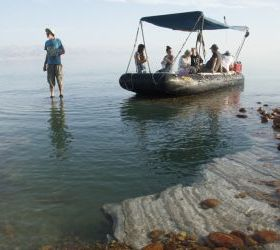

-
The Dead Sea Revival Project
heal the Dead Sea
-
Environment advocacy
and education
-
Promoting
A global supporting community
-
Database
Up to date research
ECO TOURISM

Awareness Boat Excursions
We facilitate 1-3 hour licensed boat ride adventures on Northern Dead Sea, where we explore the untouched exotic salty beaches that only the boat can reach. Max capacity 10 participants (inquire about prices)

Double Kayaks
Larger groups can be guided in double kayaks (inquire about prices).

Jeep Rides
We arrange jeep rides from Jerusalem to follow the Kidron river (one of the most polluted rivers in Israel) into the Judean Desert, crossing through ancient monasteries all the way to the waterfall into Northern Dead Sea (inquire about prices).
We are seeking sponsors of excursions tailored to delegations such as politicians, students, researchers, activists, etc.
For more information and reservations, please contact us


 Israel: A Global Leader in Water Management and Technology. In the past decades, Israel has achieved a water miracle. By adopting a holistic approach to water consumption that encompasses good management, high tech development and public education, Israel has been transformed from a water-parched nation to a global leader in the water sector.
Israel: A Global Leader in Water Management and Technology. In the past decades, Israel has achieved a water miracle. By adopting a holistic approach to water consumption that encompasses good management, high tech development and public education, Israel has been transformed from a water-parched nation to a global leader in the water sector.